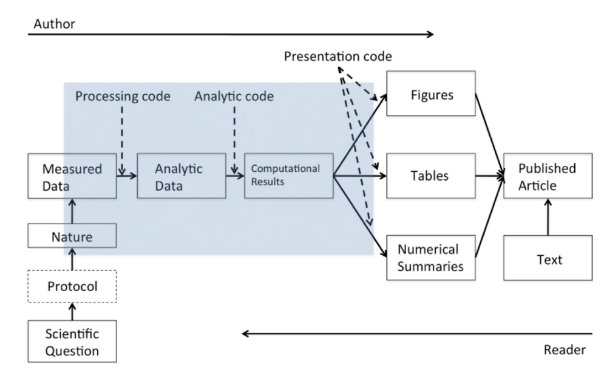

6 Clean and ethical data
(MA7419 / MA3419)
6.1 Overview
This week we’ll be looking at two topics:
- preparing less-than-perfect data sets for processing
- regulation and ethics of data science
6.2 Working with clean data
Remember the data science pipeline diagram from Week 1?

In this section we’ll be focusing on the part labelled processing code.
The processing code carries out some, or all of the following functions:
- getting the data
- exploring the structure of the data
- cleaning the data, so it is + technically correct + consistent
- tidying the data
We’ve already looked at Stages 2 and 4. We’ve also covered some simple methods for Stage 1 - and we will look at more in future weeks. So in this section we’ll be concentrating on Stage 3.
Technically correct data
We define technically correct data (Jonge and Loo 2013) from the point of view of the computer as a dumb machine:
- will the data actually load, or is it just rejected?
- is the data of the right type?
- is missing data correctly represented as NAs?
- are we using the right encoding for character elements?
Here are some useful rules:
- create headings with no spaces
- use janitor
- don’t use row names
- dates in date format
- use lubridate if you need to manipulate dates - but you don’t always need to convert (e.g. if you are given a year as an integer, or you are just using the data as a label and the format is fine)
- remove columns you don’t need
- if you have time series data, consider a time series package like
zoo- not covered in this module
- Strike a balance between doing the minimum necessary to create a dataset that is “clean” enough for the job in hand and one that has every single issue fixed so it can be used without further processing for future tasks.
- Document what you’ve done
The language around quality control isn’t always consistent in the way different words are used - but I would call this stage data verification.
Consistent data
The next stage is to make sure the data is consistent. This means: it is internally logically consistent (e.g. if one column can be calculated from others, it agrees with what you would expect); it is consistent with real-world logic; it is consistent with business logic and assumptions (there may be some overlap between those last two).
Properties of consistent data:
- it is consistent with the column heading
- it has a consistent format
- the same thing always has the same label
- it is logically consistent
- e.g. date_of_birth < date_of_death
- it follows “business” rules and assumptions
- e.g. a student id consists of eight digits
- you may need to get a domain expert to give input here
- beware of validation rules that may seem reasonable to you but are actually too restrictive
- missing, or invalid data is dealt with appropriately
With many data sets, the cleaning stage is one of the most time consuming parts of the whole process. In deciding the approach to take, and when the output if good enough, you should think carefully about the requirements of the job and the needs of the end-user. Sometimes you will need 100% correct data and sometimes you won’t. You should also be aware of any regulations - the GDPR (see below) has lots to say about data quality.
Checking data for consistency is known as data validation . (Compare with the ability to include data validation rules in Excel.) There is a package called validate (Loo and Jonge 2021) that can help.
Deciding what to do about missing data is often a tricky but crucial decision. Three options are:
- Remove or ignore records with missing data
- be careful when doing this, especially if you decide to remove a whole row (record) because of a single missing column (field)
- Try to find another source of information for the missing data
- Fill in the missing items with an estimated value (such as the mean, median or a different modelled value).
The third option is known as imputation and there is a whole page on CRAN listing R packages in the Missing Data Task View.
A hierarchy for data cleaning
- corrections that can be universally applied
- corrections that can be applied to a group identified by a business rule
- ad hoc corrections to single items
Changes should usually be applied in this order - but remember, it’s an iterative process.
Always make changes programmatically and document your reasons.
6.3 Data regulation
The UK data protection regime is set out in the Data Protection Act 2018 (DPA) and the General Data Protection Regulation (GDPR) which also forms part of UK law.
The source for most of this section is the UK Information Commissioner’s Office but the principles apply everywhere.
What is Data Protection?
Data protection is about ensuring people can trust you to use their data fairly and responsibly.
From a 2019 survey:
Nearly one in three (32%) people have high trust and confidence in companies and organisations storing and using their personal information, which is slightly down from the 34% stating this in 2018.
The proportion stating ‘none at all’ has marginally increased from 9% to 10%.
Source: harris interactive survey for the Information Commissioner’s Office
Data protection is the fair and proper use of information about people. It’s part of the fundamental right to privacy but on a more practical level, it’s really about building trust between people and organisations. It’s about treating people fairly and openly, recognising their right to have control over their own identity and their interactions with others, and striking a balance with the wider interests of society.
It’s also about removing unnecessary barriers to trade and co-operation.
Data protection (trust) is essential to innovation.
The Data Protection Act covers personal information, which means information about a particular living individual.
It doesn’t need to be ‘private’ information: even information which is public knowledge or is about someone’s professional life can be personal data.
It doesn’t cover truly anonymous information but if you could still identify someone from the details, or by combining it with other information, it will still count as personal data.
The GDPR sets out seven key principles:
- Lawfulness, fairness and transparency
- Purpose limitation
- Data minimisation
- Accuracy
- Storage limitation
- Integrity and confidentiality (security)
- Accountability
Lawfulness, fairness and transparency
- You must identify valid grounds under the GDPR (known as a ‘lawful basis’) for collecting and using personal data.
- You must ensure that you do not do anything with the data in breach of any other laws.
- You must use personal data in a way that is fair. This means you must not process the data in a way that is unduly detrimental, unexpected or misleading to the individuals concerned.
- You must be clear, open and honest with people from the start about how you will use their personal data.
Purpose limitation
- You must be clear about what your purposes for processing are from the start.
- You need to record your purposes as part of your documentation obligations and specify them in your privacy information for individuals.
- You can only use the personal data for a new purpose if either this is compatible with your original purpose, you get consent, or you have a clear obligation or function set out in law.
Data minimisation
You must ensure the personal data you are processing is:
- adequate sufficient to properly fulfil your stated purpose;
- relevant has a rational link to that purpose; and
- limited to what is necessary - you do not hold more than you need for that purpose.
Accuracy
- You should take all reasonable steps to ensure the personal data you hold is not incorrect or misleading as to any matter of fact.
- You may need to keep the personal data updated, although this will depend on what you are using it for.
- If you discover that personal data is incorrect or misleading, you must take reasonable steps to correct or erase it as soon as possible.
- You must carefully consider any challenges to the accuracy of personal data.
Storage limitation
- You must not keep personal data for longer than you need it.
- You need to think about and be able to justify how long you keep personal data. This will depend on your purposes for holding the data.
- You need a policy setting standard retention periods wherever possible, to comply with documentation requirements.
- You should also periodically review the data you hold, and erase or anonymise it when you no longer need it.
- You must carefully consider any challenges to your retention of data.
- Individuals have a right to erasure if you no longer need the data.
- You can keep personal data for longer if you are only keeping it for public interest archiving, scientific or historical research, or statistical purposes.
Integrity and confidentiality (security)
- You must ensure that you have appropriate security measures in place to protect the personal data you hold.
Accountability
- The accountability principle requires you to take responsibility for what you do with personal data and how you comply with the other principles.
- You must have appropriate measures and records in place to be able to demonstrate your compliance.
6.4 Ethical Standards
The IFoA and RSS Guide for Ethical Data Science
The Institute and Faculty of Actuaries and the Royal Statistical Society have jointly produced a Guide for Ethical Data Science (IFoA and RSS 2019) which is quoted below.
The Guide has five themes:
- Seek to enhance the value of data science for society
- Avoid harm
- Apply and maintain professional competence
- Seek to preserve or increase trustworthiness
- Maintain accountability and oversight
Seek to enhance the value of data science for society
As the impact that data science can have on society could be significant, an important ethical consideration is what the potential implications could be on society as a whole.
A common theme within ethical frameworks discussing data science and AI is for practitioners to attempt to seek outcomes within their work which support the improvement of public wellbeing. This could involve practitioners seeking to share the benefits of data science and balancing this with the wellbeing of potentially affected individuals.
Avoid harm
Data science has the potential to cause harm and this ethical consideration therefore focuses on how practitioners can avoid this by working in a manner that respects the privacy, equality and autonomy of individuals and groups, and speaking up about potential harm or ethical violations.
Practitioners may be subject to legal and regulatory obligations in relation to the privacy of individuals, relevant to the jurisdiction in which they are working, as well as regulatory obligations to speak up about harm or violations of legal requirements.
This can also be applied to work relating to businesses, animals or the environment, with consideration of commercial rights, animal welfare and the protection of environmental resources.
The recent EU paper on profiling and automatic decision making is of interest in this context.
Apply and maintain professional competence
This ethical principle expects data science practitioners to apply best practice and comply with all relevant legal and regulatory requirements, as well as applicable professional body codes.
Professional competence involves fully understanding the sources of error and bias in data, using ‘clean’ data (eg edited for missing, inconsistent or erroneous values), and supporting work with robust statistical and algorithmic methods that are appropriate to the question being asked.
Practitioners can also thoroughly assess and balance the benefits of the work versus the risks posed by it, and keep models under regular review.
Seek to preserve or increase trustworthiness
The public’s trust and confidence in the work of data scientists can be affected by the way ethical principles are applied. Practitioners can help to increase the trustworthiness of their work by considering ethical principles throughout all stages of a project.
This is another reoccurring theme that encourages practitioners to be transparent and honest when communicating about the way data is used. Transparency can include fully explaining how algorithms are being used, if and why any decisions have been delegated, and being open about the risks and biases.
Engaging widely with a diverse range of stakeholders and considering public perceptions both from the outset, and throughout projects, can help to build trustworthiness and ensure all potential biases are understood.
Maintain accountability and oversight
Another key issue in data ethics around automation and AI is the question of how practitioners maintain human accountability and oversight within their work.
Being accountable can include being mindful of how and when to delegate any decision making to systems, and having governance in place to ensure systems deliver the intended objectives.
When deciding to delegate any decision making, it would be useful to fully understand and explain the potential implications of doing so, as the work could lead to introducing advanced AI systems which do not have adequate governance. Practitioners should note that delegating any decisions to these systems does not remove any of their individual responsibilities.
Other ethics frameworks
You should research any other ethical frameworks relevant to the jurisdiction and professional area you’re working in.
For example, the UK Government has published a Data Ethics Framework.
And here is a link to the IEEE’s work on the ethics of autonomous and intelligent systems.
Regulation of AI
Regulation of AI has (November 2023) become a very hot topic. For example:
The EU has been drafting an AI Act for many months.
The US Government has recently issued an Executive Order on AI safety.
Under the Hiroshima AI process, the G7 leaders have reached an agreement on International Guiding Principles and a voluntary [Code of Conduct(https://digital-strategy.ec.europa.eu/en/library/hiroshima-process-international-code-conduct-advanced-ai-systems) for AI developers. The EU supports these principles alongside the ongoing creation of legally binding rules within the AI Act. These international standards aim to complement the EU regulations, uphold similar values, and ensure trustworthy AI development. The eleven principles aim to provide direction for the responsible development, deployment, and use of advanced AI systems such as foundation models and generative AI. They include commitments on risk and misuse mitigation, responsible information sharing, incident reporting, cybersecurity investment, and a labelling system for AI-generated content. The principles were developed jointly by the EU and other G7 members and have subsequently formed the basis for a detailed practical guidance for AI developers.
It’s worth at least skimming this material so you have a feeling for the discussion that are going on.